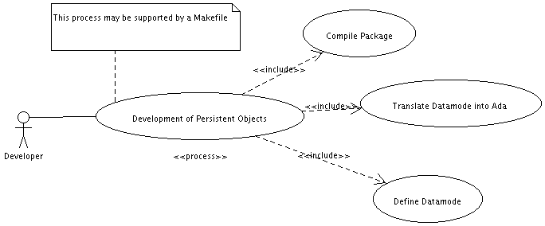
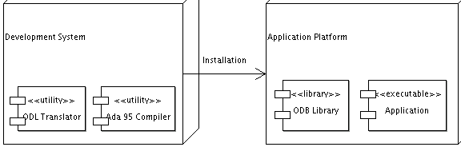

| User's Guide: A Framework for Object Persistency for GNAT; Version 0.6.1; Document Revision $Revision: 1.16 $ | ||
|---|---|---|
| Prev | Next | |
Object persistency means that your application may create a a data object which survives auto magically the shutdown of your application. The next time you start your data object is available again for use. Normally this is achieved by the explicit use of files or data bases, where the data is stored. In such cases effort has to be spend to read/write object from the files system or to locate the objects in the databases and to construct the objects from the data.
Lets assume the following code fragment:
declare
V : Persistent_Type ;
begin
..... code invoking the variable V
end ;
Persistence in this context mean, that the state of the object V is available
again, when next time the block is entered. In order to implement persistency
in this context is it sufficient simply to the V a globally defined variable.
The persistency concept provided by ODB works in a very similar way. All persistent objects are derived from a basic data types. Objects of this type are stored in a special storage pool which is saved at application termination and loaded when the application using the objects is starting up. A typical code fragment looks like this:
declare
V : Reference := Person.Create( "Michael Erdmann" ) ;
begin
..... code invoking the variable V
end ;
The function Person.Create creates an new instance with the name Michael Erdmann
if the instance is not yet stored in the in the persistent storage pool. If the
object is already existing, the procedure returns the reference to the already
existing object. This show one of the key concepts of ODB, in order to make an
Object persistent it has to be named, because otherwise it would not be
possible to retrieve the object.
In order to make the concept of persistency easy to handle, oDB provides a preprocessor which adds automatically all code to support persistency of a type to an Ada95 package. A typical construct may look like this:
package Person is
..............
type Object is persistent record
Id : attribute Natural := 0;
Name : attribute Unbounded_String;
Tmp : Natural;
end record;
function Create(
Name : in String ) return Reference is
Result : Reference := Lookup_Object( Name );
H : Handle := Handle( Result );
begin
if Result = null then
Put_Line("New instance of person created" );
Result := new Object;
Name_Object( Result, Name );
H := Handle( Result );
H.Name := To_Unbounded_String(Name);
H.Id := 1;
end if;
return Result;
end Create;
...............
end Person;
This construct defines in the package Person a persistent object Object with
the attributes Id and Name. Attributes are fields which are stored. All other
fields will not be restored when the object is restored.The procedure Create first checks if an object with the given name is already knwon. If not, a new instance will be created, otherwise the already exisisting instance will be used.
The development cycle which leads to an application using persistency is shown in the diagram below:

Steps involved in building ODB applications
In the first step, the developer implements a persistent class by creating a package which contains a single persistent data type type defining the so called data model using a simple extension of the Ada 95 language. The example below shows such a code fragement:
type Object is persistent record
A,X,Y : attribute Integer ; -- this goes into the DB
B : attribute String(1..50) ; -- this also
C : Integer := 2222; -- this not
end record ;
This code will be translated by the ODL preprocessor into Ada 95 code which contains the Serialize/Deserialize and Factory code.
After the ODL translation, the code is compiled using an Ada 95 compiler and is ready for use.

Deployment of the ODB components